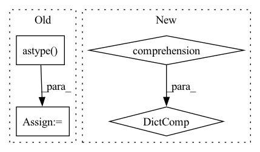

Pattern ID :26440
Before Change
ret = []
for i in range(n_fields):
values = [[item[i]] for item in batch]
values = np.concatenate(values, axis=0).astype( DEFAULTS.np_dtype)
values = torch.from_numpy(values)
ret.append(values)
return tuple(ret)
After Change
if isinstance(batch[0], dict):
keys = batch[0].keys()
collated = _default_collate_fn([tuple(b[k] for k in keys) for b in batch])
return {k: collated[i] for i, k in enumerate(keys)}
else:
return _default_collate_fn(batch)
In pattern: SUPERPATTERN
Frequency: 3
Non-data size: 4
Instances Fragment ID: 79285657
Project Name: deeppsp/torch_ecg
Commit Name: c7cd8be9b8aa243c40c5fe2cdcd799a24fa21b6b
Time: 2022-08-02
Author: wenh06@gmail.com
File Name: torch_ecg/utils/utils_nn.py
M Class Name: AnonimousClass
N Class Name: AnonimousClass
M Method Name: default_collate_fn(1)
N Method Name: default_collate_fn(1)
M Parent Class:
N Parent Class:
M File Name: torch_ecg/utils/utils_nn.py
N File Name: torch_ecg/utils/utils_nn.py
M Start Line: 697
M End Line: 707
N Start Line: 699
N End Line: 706
Before Change
if self._label_path_or_obj is not None:
self._data = pd.concat({"feature": self._data, "label": load_dataset(self._label_path_or_obj)}, axis=1)
if not isinstance(self._data.columns, pd.MultiIndex):
self._data.columns = pd.MultiIndex.from_arrays(
[
np.array(["feature", "label"])[self._data.columns.str.contains("^LABEL").astype( int) ],
self._data.columns,
]
)After Change
def _maybe_load_raw_data(self):
if self._data is not None:
return
self._data = pd.concat({
fields_group: load_dataset(path_or_obj)
for fields_group, path_or_obj in self.config.items()
} , axis=1, join=self.join)
Fragment ID: 79285651
Project Name: microsoft/qlib
Commit Name: db9758575b2c938f6e63220be9f518632afb4d28
Time: 2020-11-24
Author: Zhou.Dong@microsoft.com
File Name: qlib/data/dataset/loader.py
M Class Name: StaticDataLoader
N Class Name: StaticDataLoader
M Method Name: _maybe_load_raw_data(1)
N Method Name: _maybe_load_raw_data(1)
M Parent Class: DataLoader
N Parent Class: DataLoader
M File Name: qlib/data/dataset/loader.py
N File Name: qlib/data/dataset/loader.py
M Start Line: 202
M End Line: 211
N Start Line: 190
N End Line: 193
Before Change
y_pred_prob = context.model.predict_proba(ds_x)
dataset_classes = dataset.classes_in_label_col
multi_y = (np.array(ds_y)[:, None] == np.unique(ds_y)).astype( int)
fpr = {}
tpr = {}
thresholds = {}After Change
else:
display = None
return CheckResult({x: roc_auc[x] for x in classes_for_display} , header="ROC Report", display=display)
def add_condition_auc_greater_than(self, min_auc: float = 0.7):
Add condition - require min allowed AUC score per class. Fragment ID: 79285650
Project Name: deepchecks/deepchecks
Commit Name: ec34587bc5b26414f14a8beaa6ab45df382edb0f
Time: 2022-11-20
Author: 67195469+Nadav-Barak@users.noreply.github.com
File Name: deepchecks/tabular/checks/model_evaluation/roc_report.py
M Class Name: RocReport
N Class Name: RocReport
M Method Name: run_logic(3)
N Method Name: run_logic(3)
M Parent Class: SingleDatasetCheck
N Parent Class: SingleDatasetCheck
M File Name: deepchecks/tabular/checks/model_evaluation/roc_report.py
N File Name: deepchecks/tabular/checks/model_evaluation/roc_report.py
M Start Line: 65
M End Line: 140
N Start Line: 82
N End Line: 137